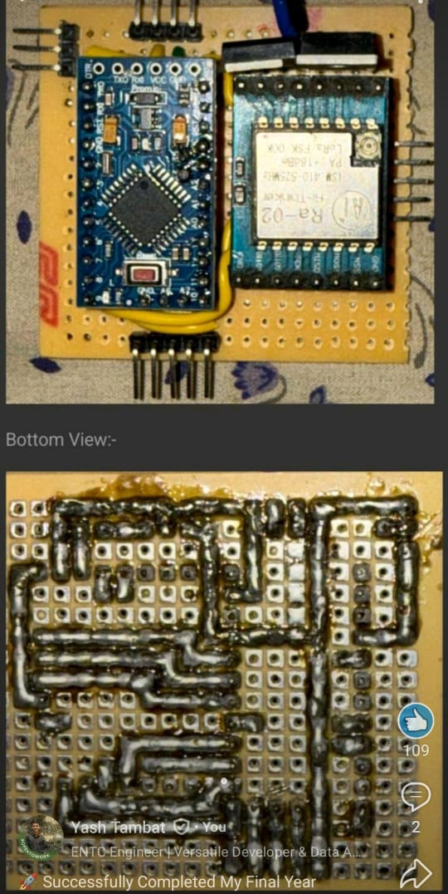
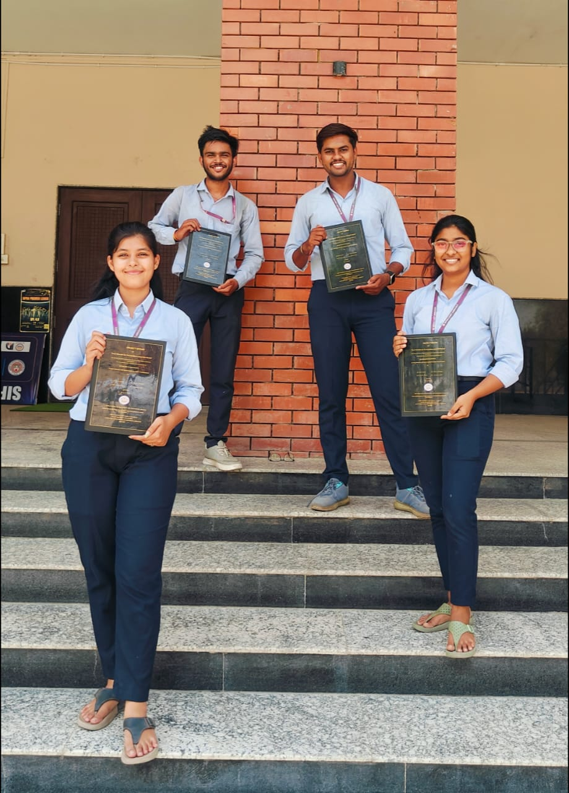

My Projects
Spotify Clone (Music Streaming Website)
- Developed a responsive music streaming website inspired by Spotify using HTML, CSS, and JavaScript.
- Created an intuitive UI with seamless music playback and playlist management features.
- Built a custom audio player with play, pause, and skip options.
- Implemented responsive design and modern UI/UX principles.
- Added support for real-time song progress tracking and seek bar functionality.
- Used CSS Flexbox/Grid for clean, scalable layout across devices.
- Applied hover effects, animations, and transitions for an interactive user experience.
- Organized code with modular structure for better readability and maintainability.
Smart Wearable Suit For Coal Miners (LORA-based)
- Designed a suit with real-time monitoring sensors for gas, temperature, heart rate, and oxygen levels.
- Used wireless LORA communication to transmit data to a central monitoring system.
- Included an SOS alert feature for emergency situations.
- Demonstrated IoT and embedded system skills for industrial safety.


Sales Data Analysis and Reporting (MySQL)
- Converted raw CSV files into normalized MySQL tables for retail data.
- Created queries using JOIN, GROUP BY, and HAVING to analyze performance.
- Used RANK() and ROW_NUMBER() functions to find top customers and trends.
- Enabled data-driven decision making through structured reporting.
- Performed data cleaning and handled missing/null values during data import.
- Applied aggregate functions like SUM(), AVG(), COUNT() for KPIs such as total sales, average order value, etc.
- Built custom dashboards or exported results to Excel/CSV for stakeholder reporting.
- Optimized queries using indexes and analyzed query performance.